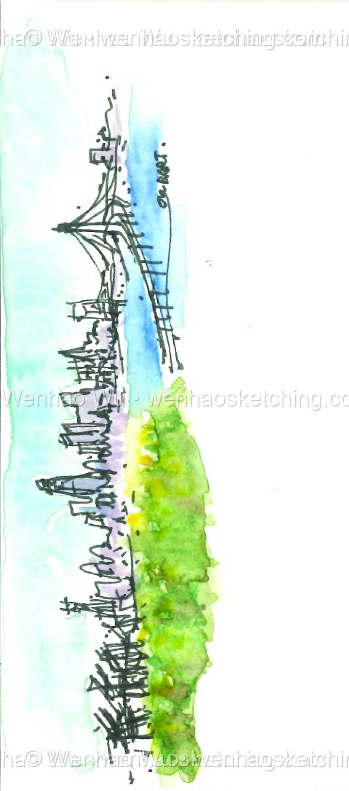

Bay View from BART
The dramatic panorama of San Francisco Bay unfolds from the BART train windows during the daily commute. Industrial structures and natural beauty coexist in this transitional landscape between cities. Passengers witness this ever-changing view as they traverse the region's diverse geography.